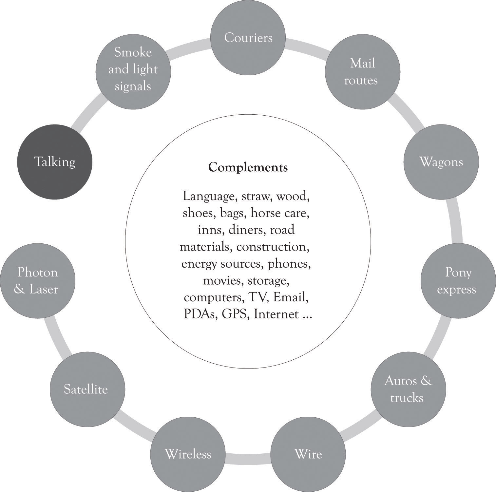
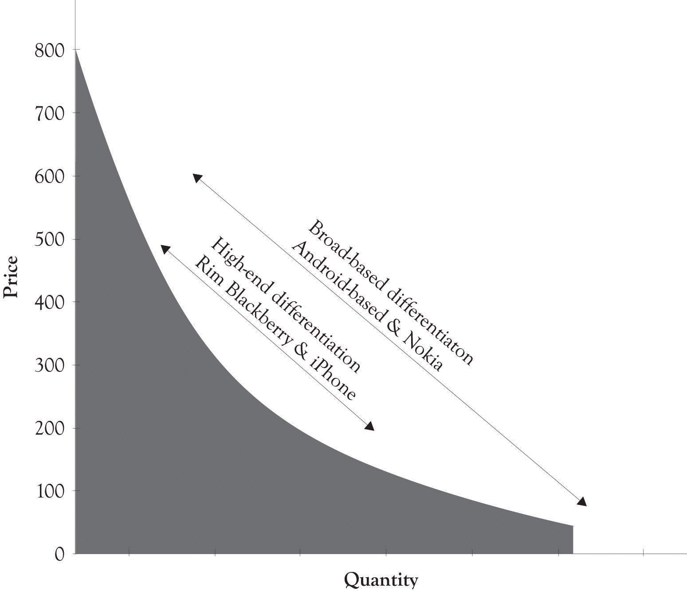

The most important activity in the history of humankind has been in the area of communications. As illustrated in Figure 5.7 "Communication Drives Innovation", the desire to communicate has been the driving force behind most of the advances in modern technology. The wireless phone is the current battle ground for the universal communication device that will be used for talking, texting and tagging friends and colleagues, scheduling, listening to music, reading eBooks, and in location assistance. Apple and Nokia’s strategies are distinctly different. Apple has gone after the cream and focused on the high end, competes primarily in the smartphone arena, and is also beginning to compete with the net-book laptops. Smartphones have applications such as scheduling, location assistance, email, and Internet access.
Nokia is not only interested in the high-end smartphone market, but they are also selling to the price-sensitive demographic and have an even bigger target in their sight. They want to become the biggest entertainment media network in the world.Borden (2009). They are trying to reach the entire market by using research and development (they have numerous research laboratories throughout the world) and by pursuing a comprehensive differentiation strategy. Nokia offers devices to satisfy every budget and they are trying to make their products and services indispensable. They have, however, been under an intense attack by Apple and Android-based phones. Android-based phones are very versatile and there are numerous models available at many price points.
Figure 5.7 Communication Drives Innovation
Figure 5.8 "Broad-based Versus High-End Differentiation Strategies for Cell Phone Devices" illustrates a PD curve for several cell phone devices. Apple and Android-based phones have been making steady gains in the smartphone business. Apple has been willing to offer a downscaled version of the iPod to the price-sensitive masses with the Nano and Shuffle. We suspect that iPhone technology will be adapted to the price-sensitive tail of the demand curve because of the competitive pressure of Android-based phones.
Figure 5.8 Broad-based Versus High-End Differentiation Strategies for Cell Phone Devices
One way to compete on price is to make it difficult for the consumer to know the true price of the product. Companies sometimes use differentiation to hide the true cost of purchasing products and services. Many companies accomplish this task by offering very complex pricing and bundling plans (numerous versions). Wireless service and long-distance providers have become very good at this strategy. These providers rarely offer simple plans such as 5 cents per minute for a certain level of usage or 3 cents per minute for a certain level of usage. Instead, they offer customer’s very complex pricing schemes and service bundles that are difficult to disentangle. This helps these providers as well as providers of cable and Internet services to reduce the damage of price competition. Consumers have to engage in a large amount of price and feature comparisons in order to understand the features provided in the tableau of products and services. This is essentially a form of product differentiation but it is more precisely service differentiation.